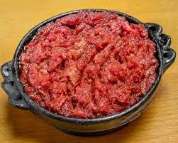

Kitfo is a revered and iconic dish in Ethiopian cuisine, particularly central to the culinary culture of the Gurage people. It consists of freshly minced raw beef, meticulously cleaned and trimmed of all fat and sinew, which is then seasoned with a distinctive spiced butter called niter kibbeh and a fiery powdered spice known as mitmita. The preparation is an art, as the meat is hand-chopped with a curved knife to achieve the perfect, fine texture before being gently warmed—but not cooked—with the melted, spiced butter. Kitfo is celebrated for its rich, buttery flavor and melt-in-the-mouth consistency, and it is traditionally served with ayib (a mild cottage cheese) and gomen (collard greens) to balance its richness. Often accompanied by injera or, more authentically in Gurage tradition, by kocho (a bread made from the fermented pulp of the false banana tree), Kitfo is a dish reserved for special occasions, festivals, and as a supreme offering to honored guests, symbolizing hospitality and celebration.
Beyond its culinary appeal, Kitfo embodies a deep cultural significance tied to notions of strength, purity, and community. The quality of the meat must be of the highest standard, reflecting trust in the butcher and respect for the participants. While its consumption is a mark of festivity, it also carries a ceremonial weight, often featured during major holidays like Meskel and at weddings. For the uninitiated, a lightly sautéed version known as "kitfo lebleb" is sometimes offered, but the true experience is found in the traditional "kitfo tere" (raw style). This dish is more than a meal; it is an expression of heritage, a testament to the skill of the preparer, and a communal act that reinforces social bonds and cultural identity within Ethiopian society.